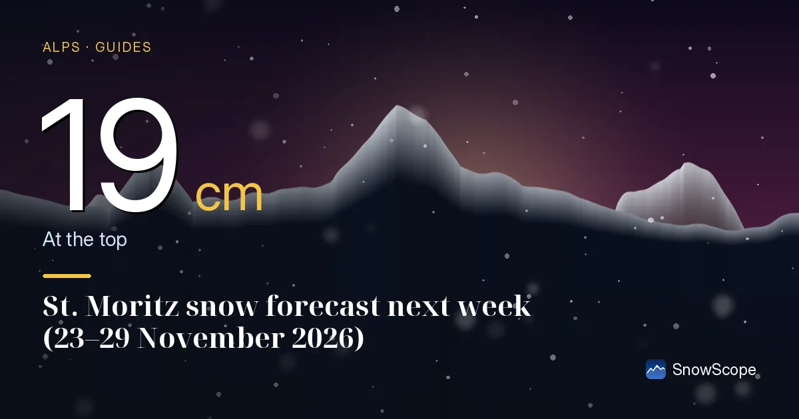
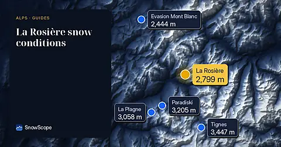

St. Moritz snow forecast next week (23–29 November 2026): 19 cm at the top
The forecast for St. Moritz in the week ahead brings 19 cm to the top, with 17 cm at mid-mountain and 16 cm at the base as the middle value of our range. Most of that snow arrives in just three days: Wednesday 25 November through Friday 27.
See the live snow forecast for St. Moritz in the SnowScope appSnow depth, powder alerts and the 3D map, free.
Three days of snow, then quiet
The week's snow is not evenly spread. Wednesday 25 brings 8 cm to the top (possibly 12 cm), Thursday 26 adds 7 cm (up to 13), and Friday 27 contributes 3 cm (up to 6). Outside those three days, the forecast is dry or nearly so.
If your calendar is flexible, Wednesday into Thursday is when to be on the mountain. The upper slopes of Corviglia and the north-facing runs on Corvatsch across the valley will hold the best snow after each fall.

How the snow varies with height
The top around 2900 m accumulates 19 cm, with a range from 5 to 33 cm. Mid-mountain at 2400 m sees 17 cm (5–30 cm), and the base at 1800 m receives 16 cm (4–28 cm). The snow-to-height ratio is unusually even for St. Moritz.
This balance means the snow line will stay well below the village for most of the week. That is good news for the entire resort, though the Engadin valley floor—already dry by November—will be the slowest to accumulate depth.
The range tells you as much as the number
At the top, our low case gives 5 cm, the high case 33 cm. That 28 cm spread reflects real uncertainty in where the storm will track and how much it will slow as it moves across the Alps. The forecast strengthens closer to the event; for now, plan for the middle (19 cm) and treat the high case as upside.
The base sees an even tighter range: 4 to 28 cm. The difference between a wet, slushy base and a snow-covered one depends on how cold it stays and how much the sun works on Wednesday and Thursday.
What the neighbouring valleys show
Livigno (24 km south) also sits at 19 cm for the week. Davos (38 km north) is slightly drier at 16 cm, while Laax (59 km west) sees 21 cm. The forecast is consistent across this corner of the Alps, so the choice of which lift to ride depends on aspect and terrain, not on chasing a snow difference.
The Engadin's elevation and sunny aspect mean that even modest snowfall sticks and survives here. Each centimetre counts more than it would in a wetter valley.
Snow sitting on what?
Before Wednesday arrives, St. Moritz is building a base from earlier in November. From 17 to 20 November, the top receives 9 cm and the base gets 4 cm. That layering matters: fresh snow on a stable base is easier to ski and less prone to surprises.
The lack of a deep existing snowpack—typical for mid-November in the Alps—means the top will feel more skied out by Friday afternoon than the centimetre count alone would suggest. Fresh cord is the target, not deep coverage.
Reading the forecast with caution
Storm timing has usually firmed up by now, but totals remain uncertain until a day or two before snow arrives.
Plan your trip around 19 cm and check the official avalanche bulletin before leaving the groomed runs. If the high case of 33 cm verifies, you will have a rare treat; if only 5 cm falls, the base will still be skiable.
Tips for skiers
- Wednesday 25 and Thursday 26 are your target days. If you can ski either, do so to catch the snow fresh before it gets tracked out.
- High is better: aim for Corviglia and Piz Nair, where the 19 cm forecast snow will accumulate fastest and stay coldest. Avoid the Engadin valley floor until midweek.
- New snow on old snow always brings new avalanche risk. Consult the Swiss avalanche bulletin before you go off-piste, and understand that Friday's forecast is drier and may tempt people into terrain that is still adjusting.
- The base at 16 cm is respectable, but the valley floor below 1800 m may still be thin or patchy. Confirm the resort's lift status and opening before you travel.
- If the forecast shifts to the high case (33 cm at the top), the entire mountain becomes safer and deeper; stay alert to updates after Tuesday 24 November.
About these numbers
Resort snow depths are the deepest snow on the resort's upper slopes on the date shown; they are estimates for an area, not a measurement at one point. Forecasts can change. Always read the official avalanche bulletin before going off-piste.
Cite this report
For research, teaching or the press: the numbers and charts are free to reuse under CC BY 4.0 with this citation.
SnowScope (2026), St. Moritz snow forecast next week (23–29 November 2026): 19 cm at the top, https://snowscope.app/blog/en/2026/11/st-moritz-snow-forecast-next-week-23-29-november-2026.html, accessed 2026-11-16
SnowScope (Atlas Labs). (2026, November 16). St. Moritz snow forecast next week (23–29 November 2026): 19 cm at the top. SnowScope snow reports. https://snowscope.app/blog/en/2026/11/st-moritz-snow-forecast-next-week-23-29-november-2026.html
BibTeX
@misc{snowscope2026stmoritzsnowforecastnext,
author = {{SnowScope (Atlas Labs)}},
title = {St. Moritz snow forecast next week (23–29 November 2026): 19 cm at the top},
year = {2026},
month = nov,
howpublished = {\url{https://snowscope.app/blog/en/2026/11/st-moritz-snow-forecast-next-week-23-29-november-2026.html}},
note = {Published 2026-11-16 11:32 UTC; accessed 2026-11-16}
}· CC BY 4.0 · Methods, data and tools →
St. Moritz: snow and temperature by height, this winter vs last (tools) →
Follow St. Moritz
Free: a message when fresh snow is coming, and the forecast every morning.
More snow reports

La Rosière top holds 24 cm on 11 November; next seven days forecast 108 cm at 2799 m, 61 cm at mid-mountain.

Isola 2000 snow depths on 11 November 2026: 9 cm at the top, 7 cm mid-mountain, 2 cm at the base. Early-season cover across the Alpine resort.

Alpe Devero has 2 cm at 2201 m on 12 November. The coming week brings 36 cm at the top, 24 cm at mid-mountain and 21 cm at the base.